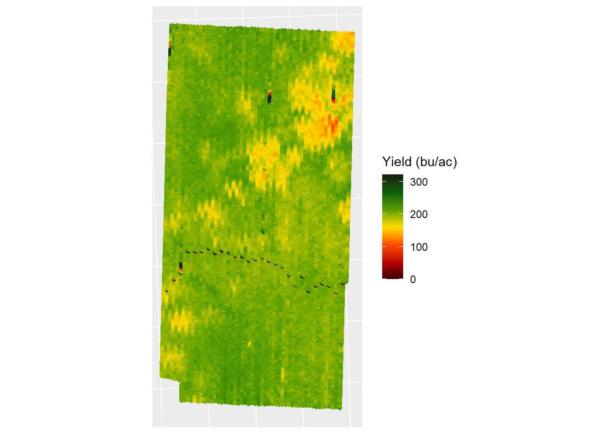

3 Clean yield monitor data & merge with satellite data
The methodology to be used in this case for cleaning yield monitor maps is that used by Cordoba et al. (2009). This methodology consists of two steps: removing outliers and cleaning according to the Local Moran Method.
Delete outliers: This involves removing yield values that are more than three standard deviations above or below the mean. In this step, global outliers located at the extremes of the dataset are eliminated, but not local extremes (spatial outliers).
Local Moran: This step involves eliminating spatial outliers, also known as inliers, which are data points that significantly differ from their neighborhood but are within the general range of variation of the dataset. This inlier identification step is based on Anselin (1995) methodology, known as the local Moran’s spatial autocorrelation index. Given a group of data belonging to different neighborhoods, Local Moran is applied to each data point individually, indicating the degree of similarity or difference between the value of an observation and the values of its neighbors. To calculate the Moran’s Index, it is necessary to identify the neighborhood for each data point, which is the domain where there are data that can be interpreted as spatial neighbors and will be used as a reference to determine whether the data point is different from its neighbors.
3.1 Import libraries
# Packages to be used
library_names <- c("sp", # (Bivand et al., 2012)
"sf", # (Pebesma, 2018)
"spdep", # local moran (Pebesma and Bivand, 2023)
"gstat", # grid and interpolation (Gräler et al., 2016)
"raster", # (Hijmans, 2023)
"tidyverse") # (Wickham et al., 2019)
# Iterate over each library name
for (lib_name in library_names) {
# Check if the library is already installed
if (!require(lib_name, character.only = TRUE)) {
# If the library is not installed, install it
install.packages(lib_name, dependencies = TRUE)
# Load the library
library(lib_name, character.only = TRUE)
} else {
# If the library is already installed, load it
library(lib_name, character.only = TRUE)
}
}3.2 Field identification
Add the name of the field that you want to clean below. The code is all related to the name that you add there.
3.3 Clean yield monitor data
Obtain path to original Yield monitor data
To automate the cleaning process, establish paths for: (i) each yield monitor data file that requires cleaning, and (ii) the field polygon. The field polygon will be used to cut the yield map, allowing for the exclusion of data collected when the harvesting machine is maneuvering around field borders and other problematic areas.
IMPORTANT:
After running the entire cleaning code, and maybe (could help to visualize) the data exploration code, check the yield distribution within the field. If there is strange patterns or some rows with completely different yields, check the data in QGIS to evaluate it there is any problem.
files <- data.frame(
path = list.files(c(paste0("1_Data/3_YM/1_Original/",FIELD_TO_CLEAN,"/Soybean"),
paste0("1_Data/3_YM/1_Original/",FIELD_TO_CLEAN,"/Maize")),
full.names = T, pattern = ".shp", recursive = T)) %>%
mutate(Polygon =list.files("1_Data/1_Polygon", pattern = paste0(FIELD_TO_CLEAN,"_pol.shp"),
full.names = T, recursive = T)) %>%
mutate(path2=path) %>%
separate(col = path2, into = c("del_Datafold" ,"del_YMfold","del_Origfold" ,"Field",
"Crop", "Farm_name"), sep = "/") %>%
separate(col = Farm_name, into = c("Family", "del_Home", "del_field", "del_harvest", "Year"),
sep = "_") %>%
mutate(Year = as.numeric(gsub(".*_(20\\d{2})-.*\\.shp", "\\1", path)))%>%
dplyr::filter(Year >2015) %>%
dplyr::select(-c(starts_with("del_"))) 1) Check data & first step of cleaning process
This code first generates yield maps before any cleaning process is applied. Next, it performs the initial step of the cleaning process by removing extreme outliers. This is done by filtering the data based on combine speed, grain moisture, and yield variables.
for (file in 1:nrow(files)){
###########################################################
#### DATA CHECKING ####
###########################################################
# Obtain yield monitor data
YM <- read_sf(files[file,1]) %>%
st_set_crs(st_crs("epsg:4326")) %>%
st_transform(crs=32616) %>%
dplyr::mutate(X = as.numeric(sf::st_coordinates(.)[,1]),
Y = as.numeric(sf::st_coordinates(.)[,2])) %>%
rename(Yield = VRYIELDVOL,
VEHICLSPEED = starts_with("VEHICLSPE")) %>%
dplyr::select(Moisture,WetMass,Yield, VEHICLSPEED,
DISTANCE)
# Obtain Field polygon (boundary)
pol <- read_sf(files[file,2]) %>%
st_transform(crs = st_crs(YM))
# Clip the yield data with the field boundary
YM <- st_intersection(YM, pol)
# Plot data to check original data
YM_original <- YM %>%
ggplot()+
geom_sf(aes(color = Yield))+
labs(color = "Yield (bu/ac)")+
scale_color_gradientn(colors = c("#3b0001","#be0003","#ff4903", "#ffdc00","#559d03","#075e07",'#161f0c'))+
theme(axis.text = element_blank(),
axis.ticks = element_blank())
ggsave(paste0("3_Output/2_YM_clean/1_Original/YM/",
files[file,3],"_",files[file,4],files[file,6],".png"),
height = 3, width = 6.5)
distr_pl <- YM %>%
dplyr::select(-FID) %>%
pivot_longer(!geometry, names_to = "Var", values_to = "Val") %>%
ggplot()+
geom_histogram(aes(Val), fill = "grey60", color = "grey20")+
facet_wrap(~Var, ncol = 1, scales = "free")+
theme_bw()+
labs(x = "Value")+
theme(strip.background = element_blank())
ggsave(paste0("3_Output/2_YM_clean/1_Original/Distr/",
files[file,3],"_",files[file,4],files[file,6],".png"),
height = 6, width = 2.5)
###########################################################
#### DATA CLEANING: STEP 1 ####
###########################################################
# 1) Remove general outliers (extreme outliers)
YM_in <- YM %>%
dplyr::filter(Yield>=0) %>%
mutate(Speed_q025 = quantile(VEHICLSPEED, 0.025),
Speed_q975 = quantile(VEHICLSPEED, 0.975),
Moist_q025 = quantile(Moisture, 0.025),
Moist_q975 = quantile(Moisture, 0.975),
mean_yield = mean(Yield),
sd_yield = sd(Yield),
LI = mean_yield-3*sd_yield,
LS = mean_yield+3*sd_yield) %>%
# Filtering rules with clear physical meaning
dplyr::filter(Yield> LI & Yield< LS &
VEHICLSPEED > Speed_q025 & VEHICLSPEED <Speed_q975&
Moisture > Moist_q025 & Moisture < Moist_q975)
sf::write_sf(YM_in,paste0("1_Data/3_YM/2_Clean_Gener_Outliers/",
FIELD_TO_CLEAN,"_",files[file,4],"_",files[file,6],".shp"),
append = FALSE)
# Plot data with the first cleaning step
YM_out <- YM_in %>%
ggplot()+
geom_sf(aes(color = Yield))+
labs(color = "Yield (bu/ac)")+
scale_color_gradientn(colors=c("#3b0001","#be0003","#ff4903", "#ffdc00","#559d03","#075e07",'#161f0c'))+
theme(axis.text = element_blank(),
axis.ticks = element_blank())
ggsave(paste0("3_Output/2_YM_clean/2_General_Outliers/",
files[file,3],"_",files[file,4],files[file,6],".png"),
height = 3, width = 6.5)
}
YM_original # Original data without removing general outliers

Path to Yield monitor without extreme/general outliers
Upload the paths to the yield monitor data shapefiles after removing extreme outliers. Additionally, create a 10 m x 10 m grid for the farm to match the cell/pixel size of the Sentinel data.
files2 <-data.frame(path=list.files("1_Data/3_YM/2_Clean_Gener_Outliers",
full.names = T,pattern = ".shp",recursive =T)) %>%
dplyr::filter(str_detect(path, FIELD_TO_CLEAN)) %>%
mutate(Polygon = as.vector(list.files("1_Data/1_Polygon",
full.names = T,
pattern = paste0(FIELD_TO_CLEAN,"_pol.shp"),
recursive = T)),
path2=path) %>%
mutate(path2 = str_remove(path2,paste0("1_Data/3_YM/2_Clean_Gener_Outliers/",
FIELD_TO_CLEAN,"_")),
Field = FIELD_TO_CLEAN) %>%
separate(col = path2, into = c("Crop", "Year"), sep = "_") %>%
mutate(Year = str_remove(Year, ".shp"))
# This part is to obtain the field boundaries
YM <- YM_in%>%
dplyr::mutate(X = as.numeric(sf::st_coordinates(.)[,1]),
Y = as.numeric(sf::st_coordinates(.)[,2])) %>%
dplyr::select(X,Y,Yield) %>%
st_drop_geometry() %>%
as.data.frame()
names(YM) <- c("X", "Y","Yield")
coordinates(YM) <- c("X", "Y")
proj4string(YM) <- CRS("+proj=utm +zone=16 +datum=WGS84 +units=m +no_defs")
grd <- expand.grid(x = seq(min(as.data.frame(YM)[,1]),
max(as.data.frame(YM)[,1]), by=10),
y = seq(min(as.data.frame(YM)[,2]),
max(as.data.frame(YM)[,2]), by=10))
names(grd) <- c("X","Y")
coordinates(grd) <- c("X","Y")
proj4string(grd) <-CRS("+proj=utm +zone=16 +datum=WGS84 +units=m +no_defs")
gridded(grd) <- TRUE # Create SpatialPixel object
fullgrid(grd) <- TRUE # Create SpatialGrid object2) Second step of cleaning yield monitor data: Local Moran
Second step of the data cleaning process: The Local Moran method was used to identify and remove inliers and spatial outliers from the dataset. Additionally, yield monitor data were interpolated using inverse distance weighting (IDW) interpolation (Gräler et al., 2016) to generate a 10x10 m grid. This grid resolution allows for the consistent overlay of yield monitor data across multiple years and aligns with the resolution of Sentinel data.
for (file in 1:nrow(files2)){
###########################################################
#### DATA CLEANING: STEP 2 ####
###########################################################
# Upload dataframe without extreme values
YM_in <- read_sf(files2[file,1])
## LOCAL MORAN CLEANING METHOD ##
NB <- dnearneigh(YM_in$geometry, d1 = 0, d2 = 18)
#summary(NB)
moranl <-localmoran(YM_in$Yield,
nb2listw(NB,style = "W"),
alternative = "less")
moranp <- moran.plot(YM_in$Yield,
col = 3,
nb2listw(NB,style = "W"),
labels = F,quiet = T,
xlab = "Rinde", ylab = "Rinde Spatially Lagged")
#summary(moranp)
influ <- moranp$is_inf
data <- cbind(YM_in, moranl, influ)
# Obtain dataset without extreme and spatial outliers
YM_clean <-subset(data, data[["Ii"]] >= 0 | data[["Pr.z...E.Ii.."]] > 0.05)
inliers_ml <-subset(data, data[["Ii"]] < 0 & data[["Pr.z...E.Ii.."]] < 0.05)
# Plot to check data
YM_clean_pl <- YM_clean %>%
ggplot()+
geom_sf(aes(color = Yield))+
labs(color = "Yield (bu/ac)")+
scale_color_gradientn(colors = c("#3b0001","#be0003","#ff4903",
"#ffdc00","#559d03","#075e07",'#161f0c'))+
theme(axis.text = element_blank(),
axis.ticks = element_blank())
ggsave(paste0("3_Output/2_YM_clean/3_Local_Moran/",
files2[file,5],"_",files2[file,3],files2[file,4],".png"),
height = 3, width = 6.5)
###########################################################
#### CREATE GRID & INTERPOLATE ####
###########################################################
# Yield data
YM <- YM_clean %>%
dplyr::mutate(X = as.numeric(sf::st_coordinates(.)[,1]),
Y = as.numeric(sf::st_coordinates(.)[,2])) %>%
dplyr::select(X,Y,Yield) %>%
st_drop_geometry() %>%
as.data.frame()
names(YM) <- c("X", "Y","Yield")
coordinates(YM) <- c("X", "Y")
proj4string(YM) <- CRS("+proj=utm +zone=16 +datum=WGS84 +units=m +no_defs")
# Create grid using the field polygon
pol <- read_sf(files2[file,2]) %>%
st_transform(crs = st_crs(YM))
# Interpolation
idw <- idw(formula = YM$Yield~1,
locations = YM, newdata = grd,
idp =3) %>%
raster::raster()
idw <- raster::mask(idw, pol)
raster::writeRaster(idw, paste0("1_Data/3_YM/3_Interp_Grid/",
files2[file,5],"_",files2[file,3],files2[file,4],
".tif"), overwrite = T)
}
3) Join all years of yield monitor data
Up to this point, we have separate shapefiles for each year and field. In this code, we are merging all the yearly shapefiles (containing the cleaned yield monitor data) for each field into a single shapefile.
# Generate a dataframe with paths and metadata
raster_paths <- data.frame(path = list.files("1_Data/3_YM/3_Interp_Grid/",
full.names = T,recursive = T,
pattern = "\\.tif$")) %>%
dplyr::filter(str_detect(path, FIELD_TO_CLEAN)) %>%
mutate(filename = basename(path),
filename = str_remove(filename, paste0(FIELD_TO_CLEAN,"_")),
filename = str_remove(filename, "\\.tif$")) %>%
separate(filename,into = c("Crop","Year"),sep ="(?<=[A-Za-z])(?=[0-9])") %>%
arrange(Crop, Year)
# Function to load raster
read_rasters <- function(x) {
raster(x)
}
# Read and stack rasters
raster_stack <- raster_paths$path %>%
map(read_rasters) %>%
stack()
YM_final <- rasterToPoints(raster_stack, spatial=TRUE) %>%
st_as_sf() %>%
pivot_longer(!geometry, names_to = "CropYear", values_to = "Yield") %>%
mutate(CropYear = str_remove(CropYear, paste0(FIELD_TO_CLEAN,"_"))) %>%
st_transform(crs=32616) %>%
dplyr::mutate(X = as.numeric(sf::st_coordinates(.)[,1]),
Y = as.numeric(sf::st_coordinates(.)[,2])) %>%
separate(CropYear, into = c("Crop", "Year"), sep = "(?<=[A-Za-z])(?=[0-9])") %>%
mutate(Year = as.numeric(Year))
write_sf(YM_final,paste0("1_Data/3_YM/4_YM_final/YM_",FIELD_TO_CLEAN,".shp"))3.4 Join yield monitor data & GCVI data (Sentinel data)
Path to rasters and clean yield monitor data
Obtain the file paths for each field image where the GCVI has already been calculated. These images correspond to three key moments: the peak, 30 days before the peak (Peak_b3), and 30 days after the peak (Peak_30).
vi_path <-
data.frame(path =list.files(c("1_Data/2_Spatial_Layer/2_VI_raster/Peak_b3/",
"1_Data/2_Spatial_Layer/2_VI_raster/Peak/",
"1_Data/2_Spatial_Layer/2_VI_raster/Peak_30/"),
full.names=T, pattern= ".tif", recursive = T)) %>%
mutate(YM_path =list.files("1_Data/3_YM/4_YM_final",
full.names=T,recursive = TRUE,
pattern=paste0(FIELD_TO_CLEAN,".shp"))) %>%
mutate(Year = gsub(".*_(20\\d{2})_.*\\.tif", "\\1", path),
Moment = str_extract(path, "(?<=2_VI_raster/)[^/]+(?=/)"),
VI = str_extract(path, "(NDVI|EVI|GCVI)"),
VI_moment = paste(Moment,VI,sep = "_")) %>%
dplyr::filter(str_detect(path, FIELD_TO_CLEAN)) %>%
pivot_wider(names_from = Year, values_from = path) %>%
dplyr::filter(VI == "GCVI")Join all rasters to a dataframe
Overlay all the rasters containing GCVI data for the field and clip them using the field boundary. Additionally, extract the relevant information from the rasters.
VImoments <- c(unique(vi_path$VI_moment))
for (VIm in VImoments) {
viPath <- vi_path %>% dplyr::filter(VI_moment == VIm)
YM <- read_sf(viPath[1][[1]]) %>%
st_transform("epsg:4326")
points <- YM %>% st_centroid()
str_crs <- "+init=epsg:4326"
y17 <-raster(viPath[5][[1]])
crs(y17) <- str_crs
names(y17) <- "2017"
y18 <-raster(viPath[6][[1]])
crs(y18) <- str_crs
names(y18) <- "2018"
y19 <-raster(viPath[7][[1]])
crs(y19) <- str_crs
names(y19) <- "2019"
y20 <-raster(viPath[8][[1]])
crs(y20) <- str_crs
names(y20) <- "2020"
y21 <-raster(viPath[9][[1]])
crs(y21) <- str_crs
names(y21) <- "2021"
y22 <-raster(viPath[10][[1]])
crs(y22) <- str_crs
names(y22) <- "2022"
y23 <-raster(viPath[11][[1]])
crs(y23) <- str_crs
names(y23) <- "2023"
## Stack/overlap the layers
layers_stacked <- raster::stack(y17,y18,y19,y20,y21,y22,y23)
data_extracted <- raster::extract(layers_stacked, points,
fun='median', df=TRUE) %>%
tibble::rownames_to_column(var = "Iden")
merge <- bind_cols(points, data_extracted) %>%
st_drop_geometry() %>%
st_as_sf(coords = c("X", "Y")) %>%
pivot_longer(starts_with("X20"),names_to = "year_VI", values_to = VIm) %>%
mutate(year_VI = as.numeric(str_remove(year_VI, "X"))) %>%
dplyr::filter(Year == year_VI) %>%
dplyr::select(Crop, Year, Yield, starts_with(VIm),geometry)
write_sf(merge,paste0("1_Data/2_Spatial_Layer/4_VI_YM/",FIELD_TO_CLEAN,"_",VIm,".shp"))
}Join yield monitor data and GCVI data
Merge the satellite data (GCVI at the peak, 30 days before, and 30 days after) with the yield monitor data across multiple years.
# Base directory and field specifics
base_dir <- "1_Data/2_Spatial_Layer/4_VI_YM/"
indices <- "GCVI"
moments <- c("_b3","","_30")
# Initial data load and filtering
main_data <- read_sf(paste0("1_Data/3_YM/4_YM_final/YM_",FIELD_TO_CLEAN,".shp")) %>%
filter(Year > 2016)
# Loop over moments and indices
for (moment in moments) {
for (vi in indices) {
file_path <- paste0(base_dir, FIELD_TO_CLEAN, "_Peak", moment, "_", vi, ".shp")
shape_data <- read_sf(file_path) %>%
st_set_crs(4326) %>%
mutate(X = as.numeric(st_coordinates(.)[, 1]),
Y = as.numeric(st_coordinates(.)[, 2])) %>%
st_drop_geometry() %>%
as.data.frame()
main_data <- left_join(main_data,shape_data,by = c("Year","X","Y","Crop","Yield"))
}
}
main_data <- main_data %>%
dplyr::select(Crop, Year, Yield, X,Y, starts_with("P")) %>%
rename(Crop = Crop)
names(main_data)## [1] "Crop" "Year" "Yield" "X" "Y" "P_3_GCV"
## [7] "Peak_GCVI" "P_30_GC" "geometry"